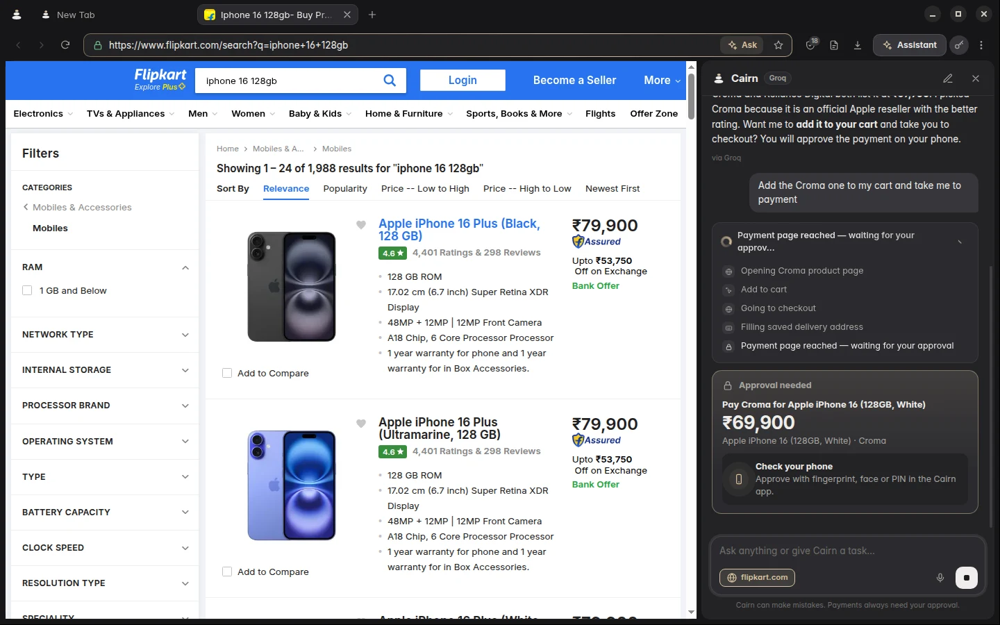
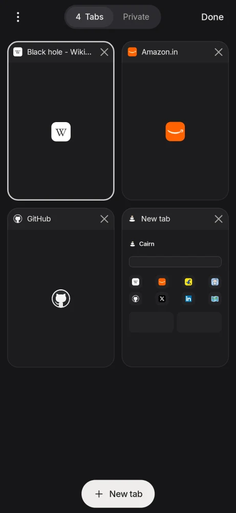
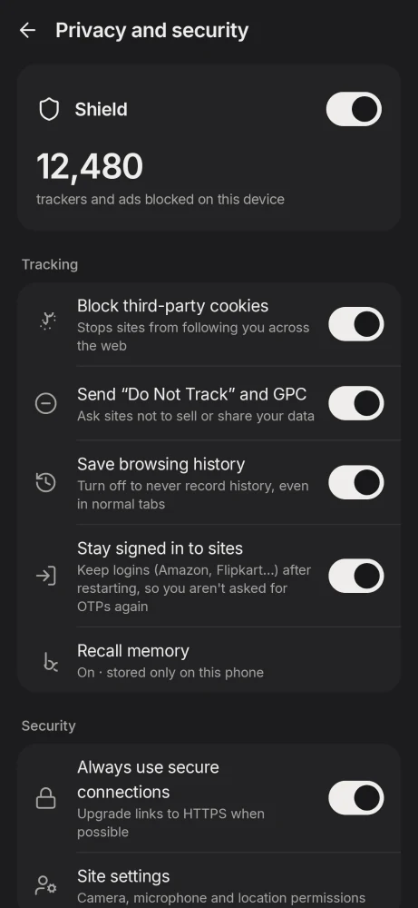

A full browser, with an agent that actually does things.
Everything you expect from a modern browser — tabs, passwords, privacy — plus an assistant that can browse, click, type, compare and save on your behalf.
Tell it the goal. Watch it work.
Cairn plans multi-step tasks and carries them out in real tabs: searching, opening pages, reading, clicking buttons, filling forms and scrolling. Every step is shown live in the assistant panel, and you can stop it at any time.
- Any language in, your language out — Hindi, Hinglish, English, Bengali, Marathi, Tamil and more.
- Voice input with Groq Whisper; tap the mic and speak.
- Asks before it acts on anything sensitive — choose “purchases only” or “every action” in Settings.
- Hands back to you for logins, OTPs and CAPTCHAs, then continues.
- Context aware — ask about the page you're on, or select text and ask.

The cheapest trustworthy deal, not just the cheapest link.
Multi-store search
Amazon.in, Flipkart, Croma, Reliance Digital, Vijay Sales and Tata CLiQ — plus Best Buy, Walmart, Target and eBay in the US, and major UK retailers.
Smart filtering
Drops cases, chargers, refurbished units and the wrong storage or colour variant before ranking.
Trust scoring
Combines store reputation, rating, review volume and suspicious-discount checks into one number.
Checkout to approval
Adds to cart, confirms the delivery address with you and stops at payment for your biometric approval.
Listen to the web.
Ask Cairn to read any article — even one you haven't opened. It fetches the page in the background, cleans it up and reads it aloud in a natural voice, while you keep browsing.
- Mini-player with pause, speed (0.8× to 2×) and stop.
- Hindi auto-detected from Devanagari text.
- Reader mode for distraction-free reading.

Summaries, PDFs, mind maps and more.
AI summary
Key points in your language, with buttons to read aloud, copy, save as PDF or open as a mind map.
Save as PDF
Clean article PDF or full page. Saved to your Cairn folder, one click to send to your phone.
Mind map
Pan, zoom, collapse branches, expand all and export as a high-resolution PNG.
Long screenshot
Full-page capture of long scrolling pages, up to 16,000 px.
Send to phone
Choose a folder name and the file is saved to Download/Cairn on your phone.
Voice commands
Speak instead of typing — transcribed in seconds and acted on immediately.
Everything you rely on, done properly.
| Capability | What you get in Cairn |
|---|---|
| Tabs & windows | Fast tabs, reopen closed tab, tab shortcuts, audio indicators, agent-activity badges |
| Password manager | Save, update, generate strong passwords and autofill; encrypted with your OS keychain; export to CSV |
| Passkeys | Sign in to your Cairn account with a passkey; websites can use passkeys through your OS |
| Cairn Shield | Ad, tracker and cryptominer blocking with a live per-site counter |
| Site permissions | In-browser prompts for location, camera, microphone and notifications, remembered per site |
| History, bookmarks, downloads | Searchable history, one-click bookmarks (Ctrl D), download manager with progress and “show in folder” |
| Search | Cairn Search by default, with cited AI answers; type a site name to open it directly. DuckDuckGo, Bing and Brave are available as alternatives |
| Appearance | Dark, light or system theme; resizable assistant panel |
| Privacy controls | Clear browsing data by time range, Do Not Track and Global Privacy Control |
| Accounts & sync | Your own Cairn account with CAPTCHA-protected sign-up, sessions you can revoke, password reset and end-to-end encrypted sync blobs |
A complete browser, with the agent in your thumb’s reach.
Bottom address bar, swipeable tabs, private tabs, Shield, a password manager, downloads, find in page, reader mode and read-aloud in the background. Pair it with your computer by QR code to approve payments with your fingerprint and receive files.
- Works on Android 8.0+ and can be set as your default browser.
- Secrets stored in the Android Keystore; approval screens block screenshots.


